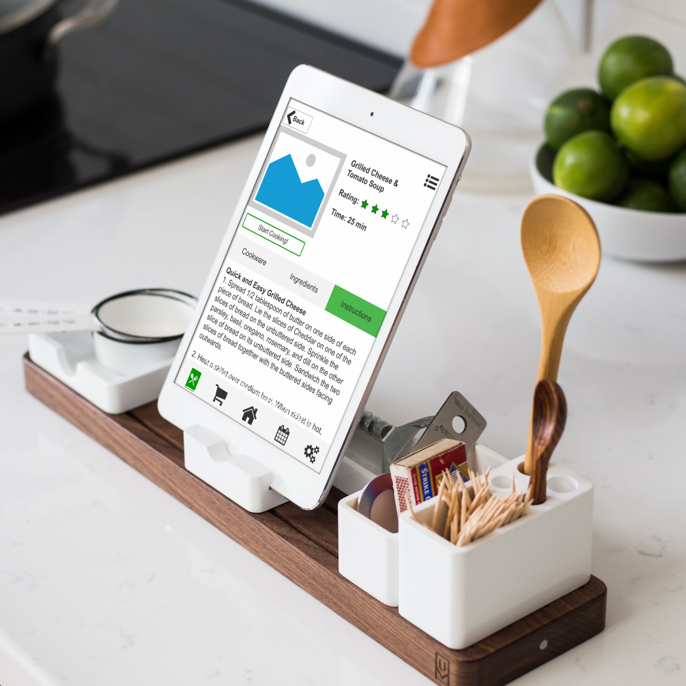

Lazy Suzan is a hands free mobile cooking application prototype built throughout a semester of collaboration with a team of three other students at Iowa State University. The goal of the project was to explore every phase of the User Centered Design process including requirements gathering, design, implementation, and evaluation, in order to create a viable conceptual design.
With the advent of mobile apps like Pinterest, cook books are being traded for more versatile electronic recipes. Cooking apps like Yummly are appealing because they allow users to search through seemingly unlimited recipes anywhere they go. This is much cheaper and more convenient than bulky and expensive cook books. However, most of these apps are meant for easy recipe search, not for providing simple and easy to follow directions. In fact, once a recipe is selected, it often leads to a blog post or external website. These links rarely follow a standardized format and can be confusing to follow, especially for novice cooks.
The requirements gathering phase of this project involved interviewing home cooks to better understand their cooking methods and their mobile app needs. We purposefully did not limit our inquiry to the use of electronic devices in the kitchen, in order to gain a "big picture" understanding of the work flow and pain points. After the interviews were completed, the data was sorted into a qualitative theme analysis. This analysis helped us break down the problem into more meaningful chunks of information. A Hierarchical task analysis of the cooking process was also created based on an observational study of an individual cooking in their own home. For the ethnographic study, the user was given a recipe to follow, and then observed as they cooked.
Next came the hard part, deciding what to design. We decided to create two personas which became evident from the data we collected: "the Planner" and "the Improviser." The planner is interested in healthy meal planning, shopping ahead of time with recipes in mind, and is quite busy being a boss lady, so she doesn't have time to search through complicated recipes. She is our primary persona. Contrastingly, the improviser is typically found throwing together whatever is left over in the fridge, she is also busy but leads a relatively hectic life. She would like to try new recipes, but she only gets around to it every occasionally, because she's taking night classes on top of long days as a barista.
Based on our personas, we quickly realized that not only did the app need to have a simple hands-free solution to following recipes, it also needed features to help categorize and plan these recipes. Time management was also imperative. These ideas led to detailed sketches of the app. Then, a cognitive walk-through was conducted using a scenario and the set of hand-drawn wire frames to identify interaction issues.
After most of the bugs were worked out, the wire frames were made into a working prototype using Axure RP. The entire app was functional in Axure, with the exception of voice commands, which were simulated using a "wizard of Oz" technique during subsequent testing.
The objective of this experiment was to examine the usability of the Lazy Suzan application when compared to allrecipes.com. The participants mainly consisted of young adults who cook using electronic recipes. A total of five participants served in the study (1 male, 4 female), with an average age of 28.57 (range: 17 - 50). Users were instructed to complete a mock cooking task using two recipes, once on allrecipes.com and once using the Lazy Suzan prototype. Users were observed completing the task in their own kitchen, and were encouraged to use props and think out loud whenever possible. After the task was completed with each app, a questionnaire including NASA TLX and SUS was completed.
Because of the small sample size, no statistically significant conclusions could be drawn. However, the trends showed that Lazy Suzan had a higher mean SUS score, a lower NASA TLX, and a higher Ease of use rating than allrecipes.com. In discussion, users mentioned that they liked the timers and the idea of a hands free, voice activated system. They also notice small bugs in the app that may have gone unnoticed before, such as a scrolling error on one of the recipe steps.
One of the biggest challenges with this project was conducting the user study evaluation. Because of our lack of resources, we could not compensate our users which led us to test friends and family. Most of this included young adults who were very skilled with technology. A better sample would have included a wider range of ages and technology skill levels.